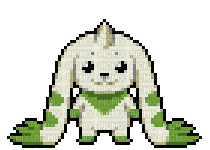
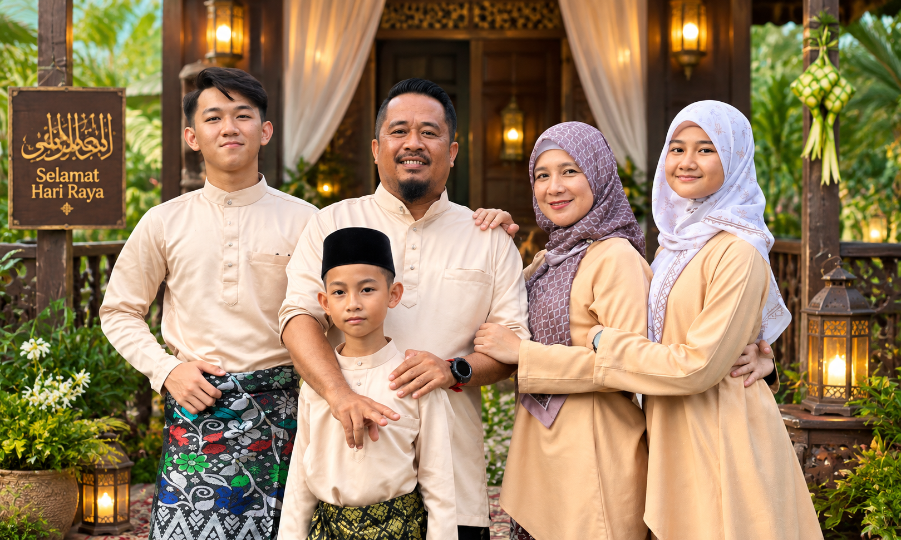

04 // HOUSEHOLD DIRECTORY & FAMILY ARCHIVES
Honoring family roots and lineage. This page features an interactive HTML Image Map with coordinate navigation as specified in the IMD318 curriculum, alongside a dynamic family moments slideshow archive.

Household Registry
| Role / Kinship | Designation | Notes & Responsibilities |
|---|---|---|
| Father | Mr. Asman Bin Abd. Rahman | Primary School Teacher |
| Mother | Mrs. Anisah Bulah Abdullah | Primary School Teacher |
| Siblings | Aiman (Self) | UiTM Undergraduate Student |
| Arlisa Najwa (Little Sister) | Secondary School Scholar | |
| Azfar Akim (Little Brother) | Primary School Scholar | |
| Family Base | Kota Marudu & Tawau, Sabah, Malaysia | |
1. Interactive Family Image Map
Click directly on the interactive banner below: click the left quadrant for Parents, center circle to return Home, or right quadrant for Siblings.

🛡️ Parents' Pillars • Mr. Asman & Mrs. Anisah
ROLE: EDUCATORSAs dedicated primary school educators, my parents instilled core principles of lifelong learning, discipline, and integrity throughout my tertiary education.
↑ Back to Image Map🤝 Siblings Camaraderie • Arlisa Najwa & Azfar Akim
STATUS: ACTIVEMutual encouragement circle fostering digital creativity, school academic pursuits, and shared goals between secondary and primary school milestones.
↑ Back to Image Map2. Family Moments Visual Archive (Slideshow)
Archival reel showcasing family events, celebrations, and outdoor gatherings:

↑ Return to Top